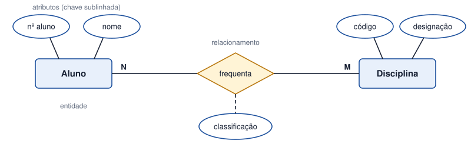

Tema 8 · Modelação de dados
Introdução à modelação de dados
Entidades, atributos e relacionamentos
Todo o sistema de informação guarda dados. Antes de criar tabelas, é preciso decidir que dados são relevantes e como se relacionam. A modelação de dados responde a esta questão através de modelos que se vão tornando mais próximos da implementação.
| Nível | O que descreve | Exemplo |
|---|---|---|
| Conceptual | Os dados do negócio, independentemente da tecnologia. | Modelo Entidade-Relacionamento (ER) |
| Lógico | Os dados organizados segundo um modelo de bases de dados. | Modelo relacional (tabelas) |
| Físico | A implementação concreta num sistema de gestão de bases de dados. | Tipos de dados, chaves, restrições |
Os três elementos básicos
- Entidade — algo do mundo real sobre o qual queremos guardar dados (Leitor, Livro, Aluno, Produto). Representa-se por um retângulo.
- Atributo — uma característica da entidade (nome, ISBN, preço). Representa-se por uma elipse; o atributo que identifica cada ocorrência é sublinhado.
- Relacionamento — a associação entre entidades (um Aluno frequenta uma Disciplina). Representa-se por um losango, com a cardinalidade nas ligações.

Uma ocorrência é um exemplar concreto da entidade: «Ana Reis» é uma ocorrência de Leitor. Quando o modelo ficar maior, representaremos os atributos listados dentro da própria entidade, para poupar espaço — é uma notação equivalente.
Atividade
Identificar entidades e atributos num sistema de biblioteca, escola e loja online
Para cada um dos três sistemas, identifique pelo menos quatro entidades e, para cada uma, três a cinco atributos, indicando o atributo identificador.
- Uma biblioteca.
- Uma escola.
- Uma loja online.
Ver proposta de resolução
| Sistema | Entidade | Atributos (identificador sublinhado) |
|---|---|---|
| Biblioteca | Leitor | nºLeitor, nome, contacto, dataInscrição |
| Livro | ISBN, título, editora, anoEdição | |
| Autor | idAutor, nome, nacionalidade | |
| Empréstimo | nºEmpréstimo, dataEmpréstimo, dataPrevistaDevolução | |
| Escola | Aluno | nºAluno, nome, dataNascimento, morada |
| Turma | códigoTurma, ano, curso | |
| Disciplina | códigoDisciplina, designação, cargaHorária | |
| Professor | nºProfessor, nome, grupoRecrutamento | |
| Loja online | Cliente | nºCliente, nome, email, morada |
| Produto | códigoProduto, designação, preço, stock | |
| Encomenda | nºEncomenda, data, estado, total | |
| Pagamento | nºPagamento, método, montante, data |
Em resumo
- A modelação de dados passa por três níveis: conceptual, lógico e físico.
- Uma entidade tem atributos; um deles identifica cada ocorrência.
- Os relacionamentos associam entidades e levam cardinalidade.
- O modelo Entidade-Relacionamento é o primeiro modelo de dados do projeto.